Første del
De otte sider
Knapperne i bunden er ikke faneblade. Hver af dem skifter til et andet program inde i Resolve, med sit eget vindue og sine egne værktøjer.
Rækkefølgen følger den vej en film bliver til: ind med materialet, klip det sammen, gør det pænt, ordn lyden, og ud med det igen. I dag bruger vi fire af dem. Resten skal I bare kunne kende igen.
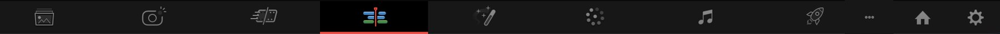
Media
Til at hente optagelser ind og sortere dem i mapper. Man kan gøre det samme fra Edit, så vi bliver ikke her ret længe.
Se hvordan siden ser ud
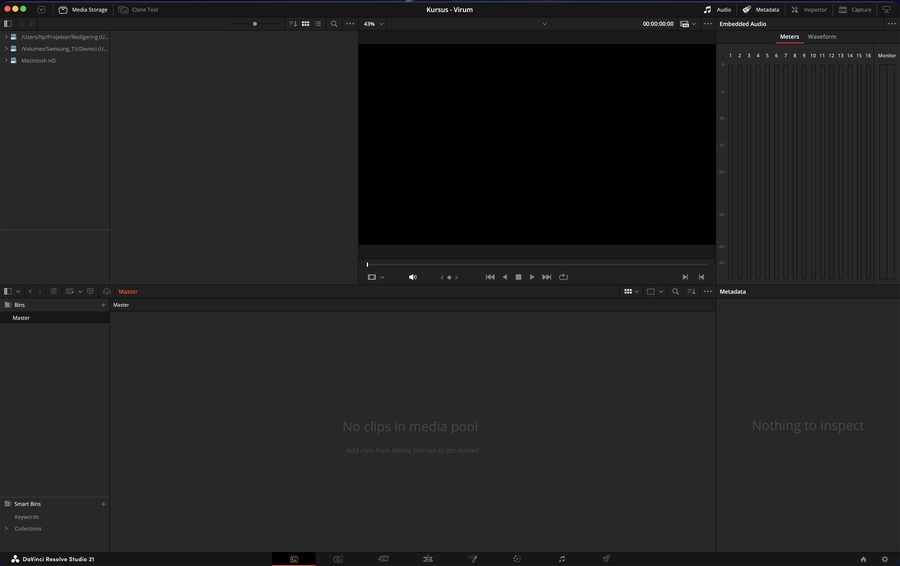
Photo
bruges ikkeNy i version 21, og beregnet til stillbilleder. Den har intet med video at gøre, og vi rører den ikke i dag.
Se hvordan siden ser ud
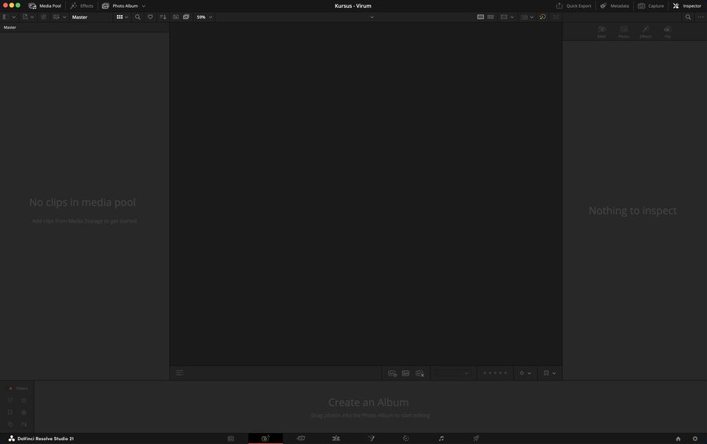
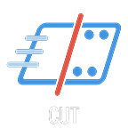
Cut
bruges ikkeEn hurtigere måde at klippe på, med et helt andet interface. Den er god, når man har travlt og skal lave mange korte film. Vi bruger den klassiske i stedet, fordi den viser tydeligere hvad der foregår.
Se hvordan siden ser ud
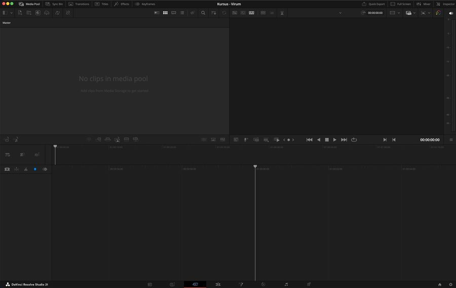
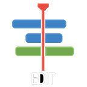
Edit
Klippebordet. Her sætter I klippene sammen til en historie, og her tilbringer vi hele formiddagen. Det er den vigtigste side i programmet.
Se hvordan siden ser ud
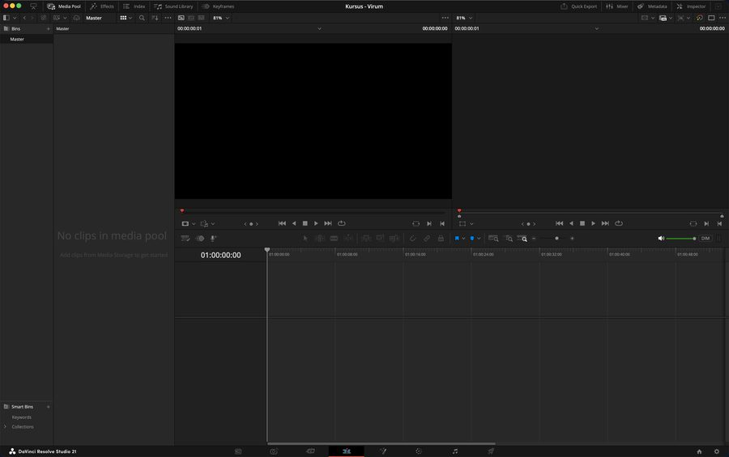
Fusion
Effekter, titler og animation. Den bygger på nodes i stedet for lag, og det er derfor den ser voldsom ud. Vi laver én ting færdig her efter frokost.
Se hvordan siden ser ud
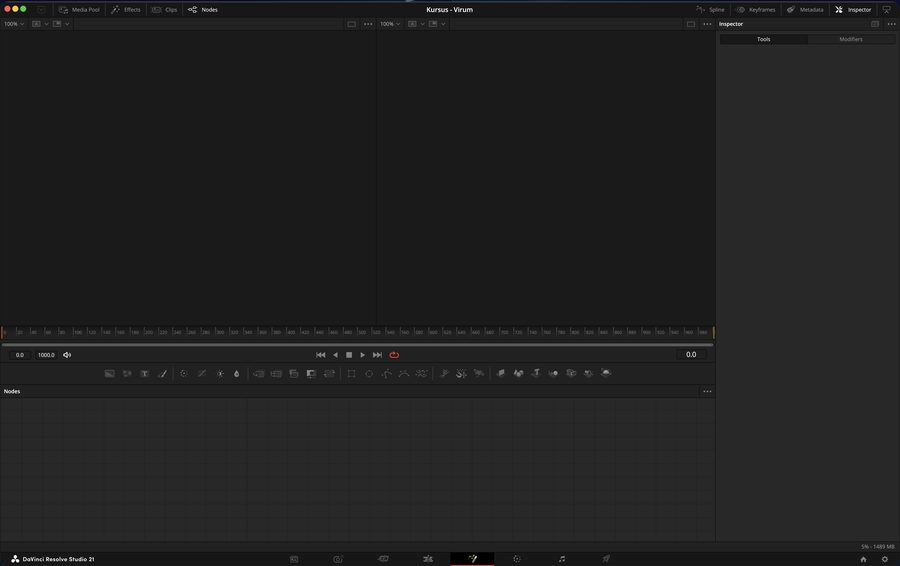
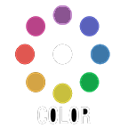
Color
Lys og farve. Det er den side, programmet er berømt for, og den bruges på rigtige spillefilm. Vi kigger på den lige efter frokost.
Se hvordan siden ser ud
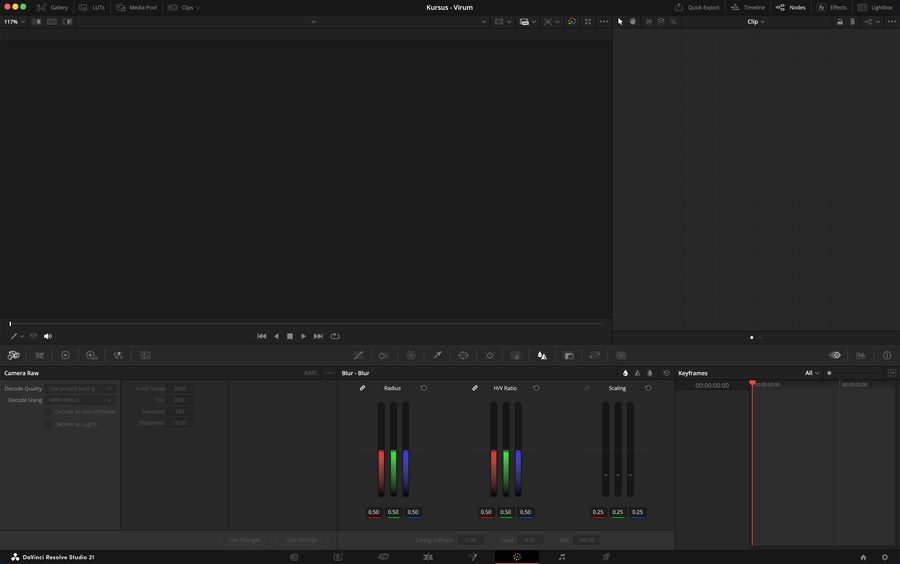
Fairlight
bonusEt helt lydstudie. Vi når den ikke i dag, men der ligger en bonuslektion på kursussiden, som I kan tage hjemmefra.
Se hvordan siden ser ud
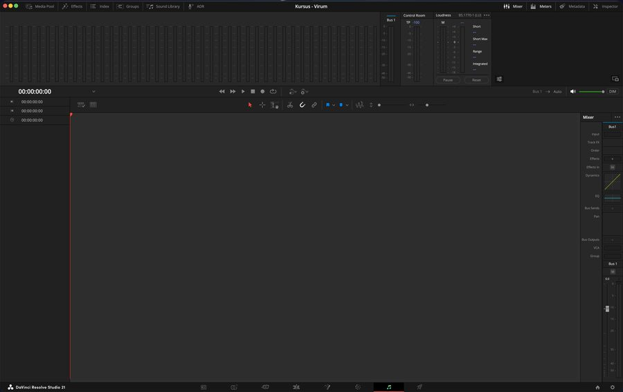
Deliver
Udgangen. Her laver I filmen om til en fil, andre kan se. Sidste stop på dagen.
Se hvordan siden ser ud
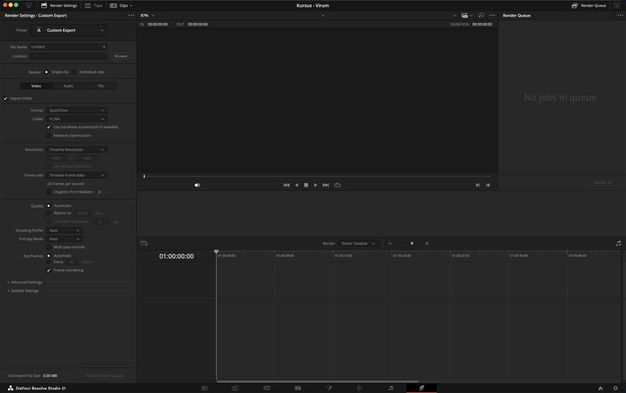
Anden del
Materialet ind i projektet
Alt materialet ligger allerede i projektet, sorteret i mapper efter lektion. De hedder bins i Resolve, men det er mapper.
I skal ikke bruge dem alle sammen i dag. Men I skal kunne finde rundt i dem, og I skal vide hvordan man selv lægger noget ind, for det skal I i sidste time.
-
Find mapperne i venstre side
Panelet hedder Media Pool og findes på både Media- og Edit-siden. Mappen til hver lektion har sit nummer, så I kan se hvor vi er henne på dagen.
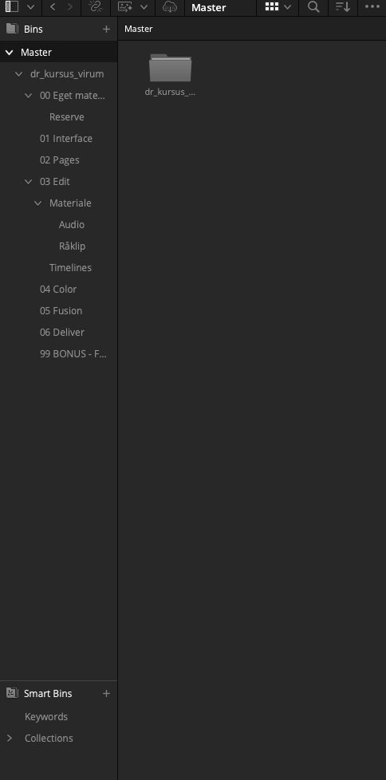
Mappen 00 Eget materiale er tom med vilje. Den er til jeres egne optagelser i sidste time. -
Prøv at lave en mappe selv
Højreklik i det tomme område under mapperne og vælg New Bin. Giv den et navn. Den kan slettes igen med det samme, pointen er kun at I ved hvor funktionen bor.
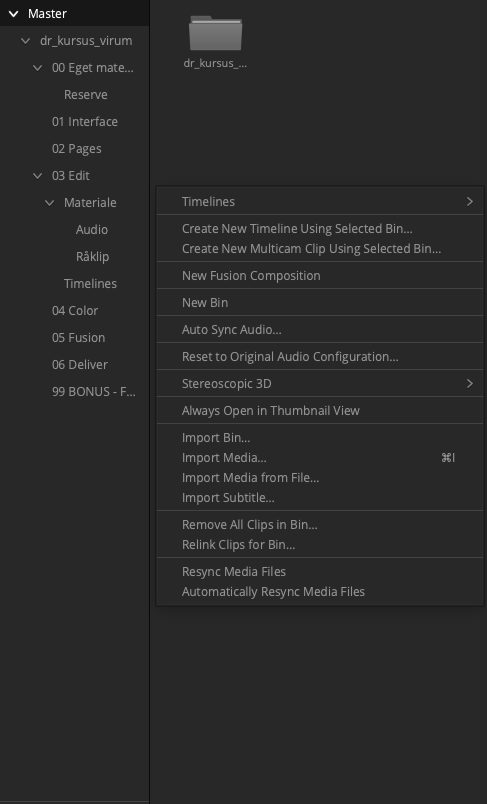
Samme menu rummer Import Media, som er vejen til at hente nye optagelser ind. Den bruger I i sidste time.
Jeg kan ikke se Media Pool
Panelet kan slås fra. Kig efter en knap der hedder Media Pool øverst til venstre, og klik på den. På Edit-siden ligger den i rækken over vinduet med optagelserne.
Tredje del
Lær optagelserne at kende
Før man kan klippe, skal man vide hvad man har. Det lyder banalt, men det er det trin, folk springer over, og så bruger de en time på at lede efter et klip, de kun halvt kan huske.
Der er én vane, der er mere værd end alle genvejene tilsammen, og det er de tre taster her.
-
Åbn et klip i vinduet til venstre
Dobbeltklik på en optagelse i Media Pool. Den lægger sig i source viewer, altså vinduet til venstre. Det til højre viser filmen, som den bliver.
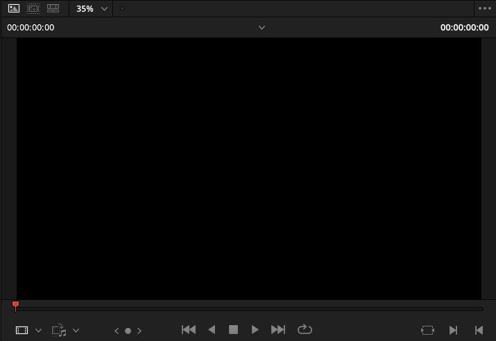
-
Brug J, K og L i stedet for musen
L spiller fremad. K stopper. J spiller baglæns. Tryk flere gange på L eller J, og det går hurtigere. Hold K nede sammen med L, og det går i slowmotion.
De tre taster sidder ved siden af hinanden, og hånden bliver på tastaturet. Det lyder som en lille ting. Det er den vane, der adskiller en, der klipper hurtigt, fra en, der ikke gør.
-
Kig materialet igennem
Brug fem minutter på at se, hvad der ligger i mappen til lektion 3. I behøver ikke huske det hele. I skal bare have set det én gang, så I ved, hvad der findes, når vi går i gang efter pausen.
Til sidst
Tjek dig selv
Prøv at svare i hovedet, før du folder ud.
Du skal gøre en optagelse lysere. Hvilken side går du til?
Color. Den håndterer lys og farve, og det er den side, programmet er kendt for.
Hvad er forskellen på vinduet til venstre og vinduet til højre?
Til venstre ser du en enkelt optagelse, som du er ved at kigge på. Til højre ser du filmen, som den bliver. Venstre er råvarer, højre er retten.
Hvad gør J, K og L?
L spiller fremad, K stopper, J spiller baglæns. Flere tryk giver højere fart. De tre taster sidder ved siden af hinanden, så hånden kan blive på tastaturet.
Hvorfor er mappen 00 Eget materiale tom?
Fordi den er til dine egne optagelser. Du fylder den i sidste time, hvor du klipper noget, du selv har filmet.